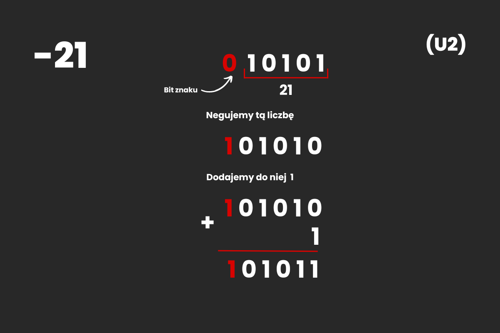
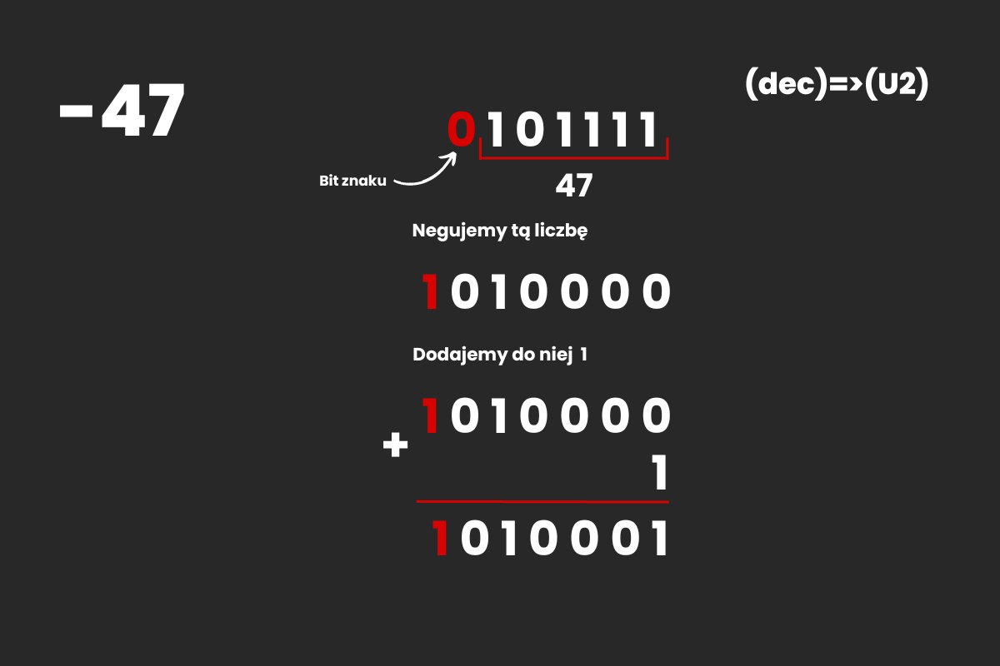
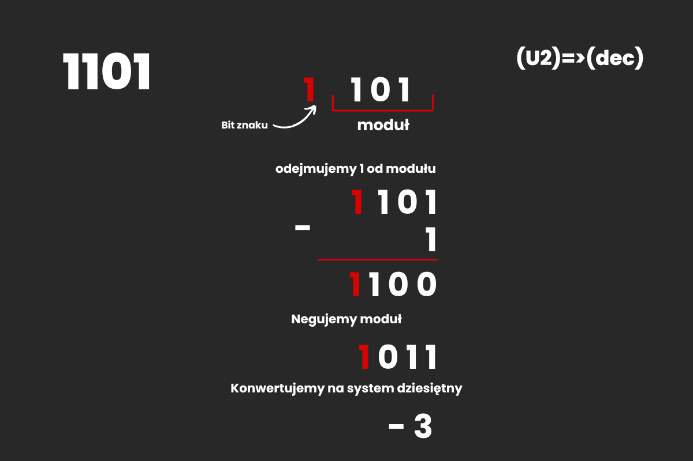

Zapis Uzupełnienie do dwóch (U2) - System U1 częściowo rozwiącywał problem z operacjami artmetycznymi, jednak nadal posiadał dwa zera. Kolejnym podejściem do tego problemu jest zapis U2. Do liczby zapisanej w systemie U1 dodajemy 1 i otrzymujemy liczbę w zapisie U2
Zapis U2 liczby -21
Jeśli przy dodawaniu jedynki nastąpi jej przeniesienie na bit znaku, nie jest on brany pod uwagę.
Przykład
Zapisz liczbę -47 (10) w systemie U2
Zapisujemy moduł liczby -47(10) w systemie binarnym. Do otrzymanego wyniku dopisujemy 0 z lewej. Następnie negujemy tą liczbę, dzięki czemu otrzymujemy wynik: 1010000(U1). Do tego dodajemy 1 i otrzymujemy wynik: 1010001(U2)
Przykład
Zapisz liczbę 1101 (U2) w systemie dziesiętnym
Wiemy, że pierwszy bit w systemie U2 to bit znaku. W tym przykładzie wynosi on 1, czyli liczba jest ujemna. Od modułu liczby odejmujemy jeden, następnie negujemy moduł i konwertujemy na system dziesiętny, dzięki czemu uzyskujemy wynik: -3(10)